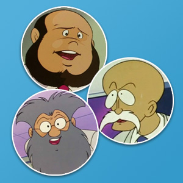

Los personajes de Mazinger Z
Los aficionados recordarán sin duda los nombres de los principales protagonistas de la serie: Koji, Sayaka, el Doctor Infierno… pero son muchos más los que intervienen en la historia y ahora vamos a repasarlo con detalle.
Koji Kabuto
Es el protagonista principal, el piloto de Mazinger Z y enemigo declarado del Doctor Infierno. Es valiente y decidido en su lucha contra el mal aunque algo más torpe para las relaciones personales. Curiosamente, sus padres no aparecen en la serie inicialmente pero sí su abuelo, el Doctor Kabuto, científico y creador del Mazinger, quien apenas puede contarle nada del robot antes de morir y debe ingeniárselas para pilotarlo y cumplir la misión de frenar los planes del antiguo socio de su abuelo, el Doctor Infierno. Le gustan mucho las motos y divertirse con sus amigos, algo propio de su edad. A lo largo de la historia está obligado a madurar para enfrentarse a retos cada vez más difíciles.
|
Sayaka Yumi
Joven de 17 años, hija del profesor Yumi, el director del Instituto de Investigaciones Fotónicas. Admira a Koji aunque en ocasiones se enzarza en discusiones y peleas propias de los adolescentes. |
Doctor Infierno El enemigo de Koji, tras la muerte de su abuelo. Su objetivo es dominar al mundo y para ello debe combatir a Mazinger con planes maquiavélicos y bestias mecánicas cada vez más letales. |
|
|
Profesor Yumi El padre de Sayaka se encarga de dirigir las operaciones en la que interviene Mazinger Z buscando la mejor estrategia para mantener a todos a salvo del Doctor Infierno y sus robots. |
Baron Ashler La mano derecha del Doctor Infierno es un extraño engendro, mitad hombre, mitad mujer. Su objetivo es hacer cumplir sus planes dirigiendo al ejercito y los robots contra Mazinger Z. |
|
|
Boss
Compañero de Koji del instituto, es un buen motorista y pilota un pequeño robot mientras colabora en cada aventura con la ayuda de dos secuaces no muy habilidosos: Mucha y Nuke. |
Mucha y Nuke Son dos inseparable amigos que colaboran con el grupo siempre a las órdenes de Boss y preparados con sus motos para intervenir en cualquier momento en que se les necesite. |
|
|
Siro Kabuto Hermano pequeño de Koji. Es un niño muy curioso y que colabora con sus ingeniosas ideas, buscando también con ello la atención de su hermano. |
Conde Decapitado
Es un cyborg, mitad hombre, mitad máquina. Con la cabeza separada del cuerpo, dirige a un ejército que combate sin piedad contra Mazinger Z. |
|
|
Los científicos  Siempre pendientes de que el Mazinger esté en perfectas condiciones son (de arriba abajo) el Dr. Morimori, el Dr. Sewashi y el Dr. Notsusori. |
Máscara de Hierro Forman un ejército a las órdenes del Doctor Infierno y el Barón Ashler. Realizan todo tipo de operaciones de apoyo a las bestias mecánicas. |